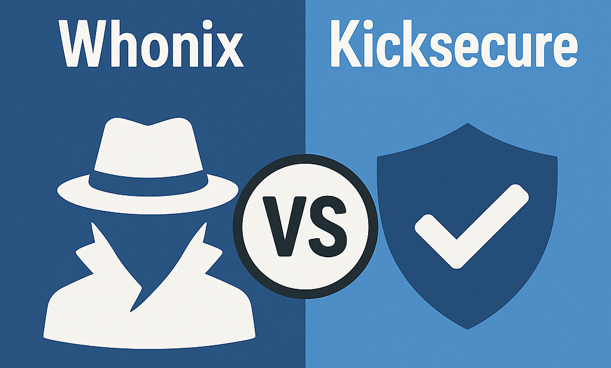

We believe security software like Whonix needs to remain Open Source and independent. Would you help sustain and grow the project? Learn more about our 14 year success story and maybe DONATE!
Dev/Technical IntroductionDesignComparison Of Tor Proxies CGI proxies Proxy Chains And VPN ServicesPrevious page: Dev/Technical IntroductionIndex page: DesignNext page: Comparison Of Tor Proxies CGI proxies Proxy Chains And VPN ServicesComparison - Whonix versus Kicksecure

This page provides a detailed comparison between Whonix and Kicksecure.
Comparison Table
Feature |
Whonix |
Kicksecure |
|---|---|---|
Based On |
Debian, Kicksecure |
Debian |
Network Routing |
All traffic through Tor |
No Tor routing by default, except, see footnote [1] |
Main Focus |
Anonymity and privacy |
Security hardening (improving system defenses against attacks) |
Use Cases |
Anonymous activities |
General secure computing |
Comparison with Kicksecure
Both Whonix and Kicksecure™ are Linux distributions based on Debian and developed by some of the same contributors. However, they serve different purposes:
Key Differences
Security vs Anonymity
- Kicksecure focuses on system security without enforcing anonymity.
- Whonix reliably forces all traffic through Tor and provides anonymity features (Full Spectrum Anti-Tracking Protection - protecting against many types of tracking, not just IP exposure).
Network Routing
- Kicksecure does not route all traffic through Tor by default.
- Whonix uses two virtual machines - one called the Gateway (for connecting to Tor) and one called the Workstation (for user activity) - to ensure that all internet traffic is anonymized.
Intended Use Cases
- Kicksecure: For users who need a hardened Linux environment without requiring anonymity.
- Whonix: For users who require anonymity and privacy protections.
When to Use Kicksecure
- For applications that need security hardening without anonymity.
When to Use Whonix
- For tasks that require guaranteed Tor routing and anonymity.
Can Kicksecure Be Used Instead of Whonix?
No. While both share many features, they are designed for different use cases. Kicksecure™ cannot provide the same anonymity guarantees as Whonix.
What are you trying to achieve?
- "I need security but don't need Tor routing" → Use Kicksecure.
- "I need anonymity or Tor routing" → Use Whonix.
Why are there two separate projects?
Kicksecure and Whonix have different goals: one focuses on security (Kicksecure), and the other on anonymity (Whonix).
Footnotes
 Secure and Privacy-Protected Software Installation and Upgrades
Secure and Privacy-Protected Software Installation and Upgrades
Categories: Documentation